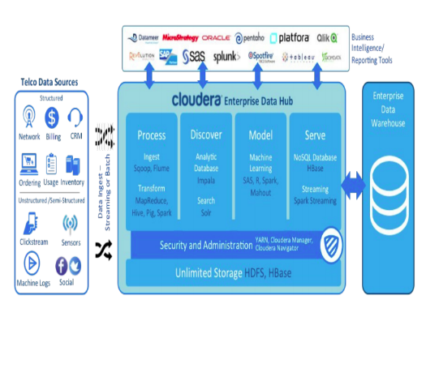
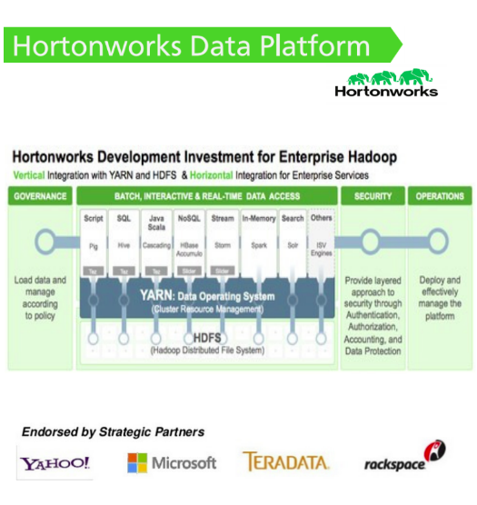
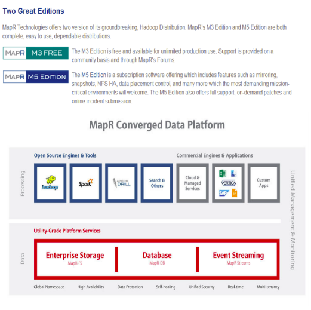
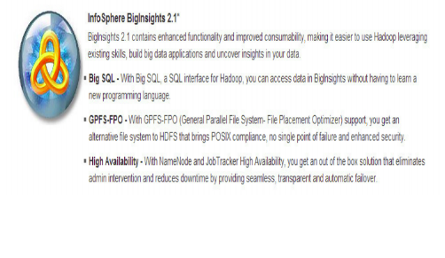
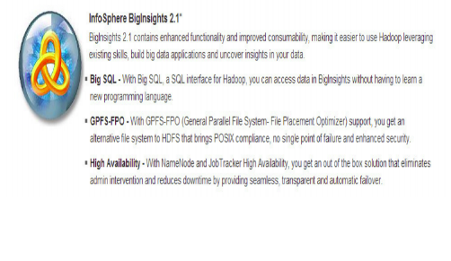

Cloudera¶
Cloudera : Hadoop :: Red Hat : Linux
Cloudera’s Distribution Including Apache Hadoop (CDH) A packaged set of Hadoop modules that work together Now at CDH4
Largest contributor of code to Apache Hadoop¶
CDH4¶
The world’s leading Apache Hadoop distribution. CDH (Cloudera’s Distribution, including Apache Hadoop) is Cloudera’s 100% open-source Hadoop distribution, and the world’s leading Apache Hadoop solution.
 MapR Apache Hadoop¶
MapR’s Distribution for Apache Hadoop¶
MapR is a complete distribution that includes HBaseTM, Pig, Hive, Mahout, Cascading, Sqoop, Flume and more. MapR’s distribution is 100% API compatible with Hadoop (MapReduce, HDFS and HBaseTM). MapR Technologies has signiicantly advanced Hadoop by making it easy, dependable, and fast.
Two Great Edition¶
Intel Distribution for Apache Hadoop¶
Open Platform for Next-Gen Analytics¶
Intel® Distribution for Apache Hadoop* software (Intel® Distribution) is a software platform that provides distributed processing and data management for enterprise applications that analyze massive amounts of diverse data. Intel Distribution is an open source software product that includes Apache Hadoop and other software components along with enhancements and ixes from Intel. Proven in production at some of the most demanding enterprise deployments in the world, Intel Distribution is supported by a worldwide engineering team with access to expertise in the entire software stack as well as the underlying processor, storage, and networking components.
- Key Features:
- Up to 30x boost in Hadoop performance with optimizations for Intel® Xeon processors, Intel® SSD storage, and Intel® 10GbE networking
- Data conidentiality without a performance penalty with encryption and decryption in HDFS enhanced by Intel® AES-NI and role-based access control with cell-level granularity in Hbase
- Multi-site scalability and adaptive data replication in HBase and HDFS
- Up to 3.5x improvement in Hive query performance
- Support for statistical analysis with R connector
- Enables graph analytics with Intel® Graph Builder
- Enterprise-grade support and services from Intel
Windows Azure HDInsight¶
HDInsight Service makes Apache Hadoop available as a service in the cloud. It makes the HDFS/MapReduce software framework available in a simpler, more scalable, and cost eicient environment.
Apache Hadoop on cloud and on premises that accommodates both Windows and Linux.
- Interactive Console
- run a Pig-Latin Job from the Interactive Javascript Console
- Create and run a JavaScript MapReduce job
- Execute a job using Hive
- Remote Desktop
- The Hadoop command shell
- View the Job Tracker
- View HDFS
- Open Port
- Connect Excel Hive
- Add-In To Hadoop on Azure via HiveODBC
- FTP data to Hadoop on Azure
- Manage Data
- Import Data from Data Market
- Setup ASV–use your Windows
- Azure Blob Store account
- Setup S3–use your Amazon S3 account
IBM InfoSphere BigInsights¶
Bringing the power of Hadoop to the enterprise¶
 
